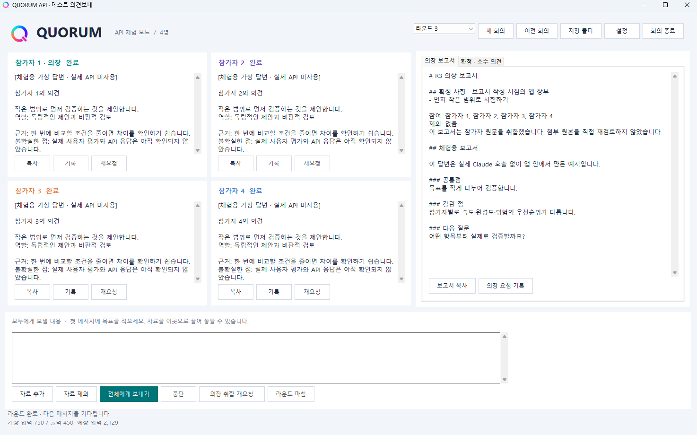

쿼럼, 회의의 규칙을 세우다
독립 의견부터 사용자 승인까지, API 기반 쿼럼의 첫 설계
· API 첫 설계와 체험 화면API로 연결하는 별도 회의 앱
이번에는 쿼럼을 API로 연결하는 별도 Windows 앱의 첫 설계를 정리했다. 기준 문서는 ‘QUORUM API 통합 구현안 v0.4’다. 회의가 어떻게 시작되고, 의견이 어떻게 모이며, 무엇을 기록으로 남길지 구체적으로 정하는 단계다.
가상 답변으로 회의 흐름을 살펴볼 수 있는 첫 실행화면도 나왔다. 현재 화면은 실제 Claude API를 호출하지 않는 체험 모드다. 아래의 회의 규칙은 설계 기준이며, 실제 API 연결과 오류·복원 검증, 효용 평가는 별도로 확인할 일이다.

첫 버전은 C#과 Windows Forms를 기반으로 만든다. Anthropic API 키 하나로 참가자 2~4명을 구성하고, 그중 한 명이 의장을 맡는다. 처음부터 여러 회사의 모델을 모두 연결하지 않고, 같은 Claude 모델에 서로 다른 역할을 주거나 동일한 역할로 의견을 내게 하며 구조부터 검증하기로 했다.
내가 질문을 보내면 참가자들이 의견을 작성하고, 의장이 이를 취합한 뒤 다음 질문을 기다린다. 자동으로 다음 회의를 시작하지는 않는다. 브라우저 조작이나 PC 작업, DOCX·3D 처리도 첫 버전에서는 제외했다.
먼저 도착한 답변에 끌려가지 않도록
독립 의견을 받는 과정에는 명확한 규칙을 뒀다. 라운드가 시작되면 질문과 목표, 확정 사항, 남아 있는 소수 의견, 직전 보고서와 첨부 자료를 고정한다. 최대 두 요청씩 실행하되, 뒤에 차례가 오는 참가자도 같은 공통 자료를 받는다. 먼저 도착한 이번 라운드의 답변은 다른 참가자에게 보여주지 않는다.
의장도 처음에는 독립 의견을 낸다. 취합할 때는 의장 자신의 답변 역시 다른 참가자의 원문과 함께 넣는다. 보고서에는 누구의 의견이 포함됐고 누구의 의견이 빠졌는지, 그 이유까지 표시하도록 했다. 이미지와 PDF 원본은 취합 요청에 다시 보내지 않으므로, 의장이 원본을 직접 재검토한 것처럼 보이지 않도록 안내도 붙인다.
의장은 제안하고, 확정은 내가 한다
의장이 정리한 내용은 우선 ‘후보’다. 내가 확정·기각 버튼을 눌러야 장부에 반영된다. “좋아, 계속해” 같은 대화를 AI가 임의로 승인이라고 판단하게 두지 않는다. 무엇을 언제 승인했는지 기록하고, 기존 결정을 바꾸거나 철회할 때도 이력을 남긴다.
보고서의 확정 사항은 의장이 다시 요약하는 대신 앱이 장부 원문을 그대로 넣는다. 소수 의견도 앱이 보존한다. 의장은 변경을 제안할 수 있지만, 이전 결정을 조용히 고치거나 반대 의견을 없애지는 못하도록 설계했다.
끊겼을 때도 기록은 남아야 한다
API 요청은 답변을 기다리다 중단되거나 일부만 받은 채 끝날 수 있다. 그래서 전송 전에 요청 기록을 먼저 저장하고, 저장에 실패하면 호출하지 않도록 했다. 앱이 꺼졌을 때는 개별 요청 기록으로 상태를 복원한다. 확인할 수 없는 결과는 ‘결과 불명’, 잘린 답변은 ‘미완료’로 남긴다.
자동 재시도는 하지 않는다. 다시 요청할지는 내가 선택하고, 이미 성공한 다른 참가자는 불필요하게 다시 호출하지 않는다. 취합에 넣을 답변 목록을 고정한 뒤 늦게 도착한 응답도 현재 보고서를 자동으로 바꾸지 않게 했다.
첨부 파일과 참가자 답변은 검토할 자료로 취급한다. 그 안에 명령처럼 보이는 문장이 있어도 앱 실행이나 장부 승인으로 받아들이지 않는다. 예상 입력량과 실제 사용량도 구분해 보여준다. 토큰 수를 확정 요금처럼 표시하지 않고, 계산하지 못했다면 ‘미계산’으로 남긴다. 비용 한도 차단은 이번 범위에 포함하지 않았다. 토큰 계산도 외부로 자료를 보내는 일이므로 파일을 끌어놓는 순간이 아니라 보내기를 누른 뒤 시작하도록 했다.
회의가 실제로 도움이 되는지 확인하기
구현 후에는 가짜 응답기로 저장 실패와 강제 종료, 잘린 답변, 취소와 완료가 겹치는 상황부터 시험할 계획이다. 화면과 기록이 실제 상태를 제대로 보여주는지 확인하는 과정이다.
실제 효용은 EASTWAR 질문 3~5개로 비교하려 한다. 반대 입장까지 검토하도록 한 단독 답변, 독립 답변 네 개, 그 원문을 재사용한 의장 취합본, 참가자 두 명의 회의와 역할을 나눈 네 명의 회의를 비교한다. 조건 이름을 가리고 순서를 섞은 결과를 내가 먼저 평가하고, 시간과 토큰 사용량도 함께 기록할 예정이다.
몇 개 질문으로 쿼럼의 우월성을 단정할 수는 없다. 다만 어떤 상황에서 회의가 도움이 되는지 살펴보는 출발점은 될 수 있다. 이번 제작기는 그 시험에 앞서, 쿼럼이 따라야 할 회의 규칙을 정리한 기록이다.
이제 첫발을 내딛는다. 서로 다른 의견을 충분히 듣고 더 나은 판단을 내릴 수 있도록, 쿼럼을 최고의 AI 회의 앱으로 만들어가기 위해 노력하겠다.